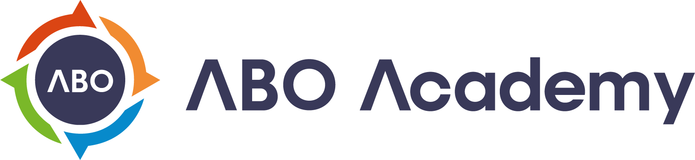
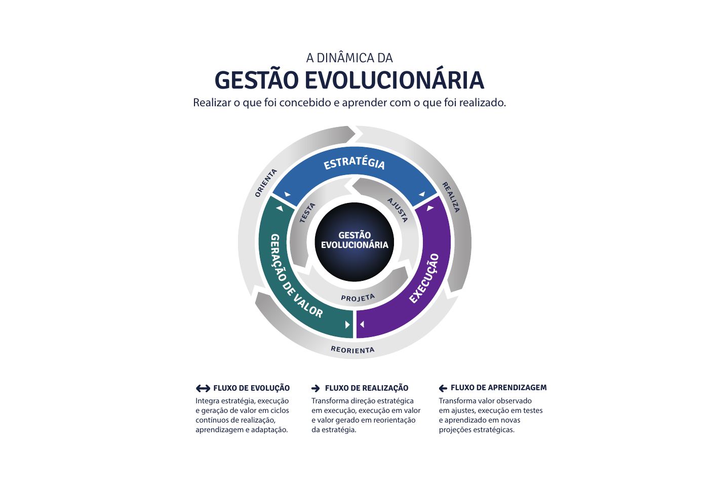

Um portfólio conectado à estratégia
Aprender a priorizar e acompanhar programas considerando capacidades, investimentos e resultados esperados.

Vamos conversarPROGRAMA EXECUTIVO · GEE
Gestão Estratégica Evolucionária
Desenvolva líderes e práticas de gestão para transformar a direção estratégica em ações coordenadas, aprender com a execução e ajustar o caminho.
Dê continuidade à sua estratégia Conheça o GEEEstratégia → portfólio → planos táticos
Revisar a execução e a geração de valor
Ajustar as escolhas e orientar o próximo ciclo
Treinamento / Mentoria / Coaching executivo
Depois das escolhas estratégicas, começa o desafio de mantê-las conectadas às decisões do dia a dia.
O GEE é um programa executivo para desenvolver a capacidade de gestão estratégica da organização. Líderes e gestores aprendem a desdobrar a estratégia, acompanhar o portfólio e usar os resultados da execução para orientar novas decisões.
A ABO Academy conduz esse desenvolvimento com treinamento, mentoria e coaching. Sua liderança assume as decisões e a condução do negócio.
SUA ORGANIZAÇÃO RECONHECE ESSES DESAFIOS?
01Há muitas iniciativas, mas pouca clareza sobre quais prioridades sustentam a estratégia.
02As reuniões acompanham tarefas, mas nem sempre discutem valor, capacidades e aprendizado.
03O plano foi aprovado, mas faltam rotinas para revê-lo diante do que a execução revela.
A Gestão Evolucionária conecta estratégia, execução e geração de valor. O que acontece na prática alimenta a análise, a revisão das prioridades e os próximos movimentos da organização.

03 / GESTÃO QUE GANHA CADÊNCIA
Revisões recorrentes criam espaço para analisar evidências, tratar interdependências e decidir o que precisa continuar, mudar ou ser encerrado.
Aprender a priorizar e acompanhar programas considerando capacidades, investimentos e resultados esperados.
Criar cadências para acompanhar a execução e revisar a direção. A frequência é desenhada para o contexto da organização.
Fortalecer o Comitê de Gestão Estratégica como espaço de alinhamento, aprendizagem e decisão da liderança.
Avaliar a maturidade das capacidades torna mais objetiva a análise da efetividade do desenvolvimento organizacional.
O ECMM — Evolutionary Capability Maturity Model — é o modelo de maturidade utilizado no GEE para avaliar o grau de evolução das capacidades da organização.
Com avaliações mensais e trimestrais, a liderança acompanha essa evolução ao longo do tempo e incorpora essa leitura às conversas sobre gestão e desenvolvimento organizacional.
Acompanhar mensalmente o grau de evolução das capacidades e levar essa leitura às discussões da liderança.
Realizar avaliações trimestrais para analisar a maturidade e a efetividade do desenvolvimento organizacional ao longo do ciclo.
O programa acompanha a realidade da sua estratégia. Cada fase combina formação, mentoria e coaching para consolidar práticas que a liderança consiga sustentar.
Duração, ritmo e profundidade definidos conforme o contexto e a maturidade da organização.
PREPARAR
Preparar líderes e gestores para analisar a estratégia, desdobrá-la em planos táticos e estabelecer as primeiras rotinas de acompanhamento.
Capacidade em desenvolvimento Clareza para organizar a execução e acompanhar os programas.
SUSTENTAR
Desenvolver a capacidade de sustentar o negócio atual e, ao mesmo tempo, conduzir sua transformação. Conectar governança, portfólio e execução.
Capacidade em desenvolvimento Decisões integradas sobre prioridades, recursos e evolução do negócio.
EVOLUIR
Consolidar as práticas de gestão e usar as evidências do ciclo para revisar a estratégia e preparar a próxima temporada.
Capacidade em desenvolvimento Aprender com a execução e adaptar a estratégia de forma consciente.
06 / DESENVOLVER ENQUANTO ACONTECE
Alta gestão, gestores e líderes de programas trabalham sobre os desafios da própria organização. A participação ativa da liderança conecta o desenvolvimento às decisões que precisam ser tomadas.
Formação nas práticas e ferramentas do ABO Framework para criar uma linguagem compartilhada de gestão.
Encontros recorrentes para refletir sobre o portfólio, o funcionamento da governança e a evolução das práticas.
Apoio individual e em grupo para fortalecer conexão, consciência, coerência e consistência na atuação da liderança.
A liderança conta com um conjunto de agentes de IA voltados ao planejamento e à gestão estratégica do negócio.
Esses agentes fazem parte dos recursos disponibilizados nos programas da ABO Academy. No GEE, a inteligência artificial soma-se ao método, à mentoria e ao coaching executivo no apoio à liderança.
A responsabilidade pelas escolhas estratégicas e pela condução do negócio permanece com os líderes da organização.
PLANEJAMENTO ESTRATÉGICOApoio de IA ao trabalho da liderança no planejamento do negócio.
GESTÃO ESTRATÉGICAApoio de IA ao trabalho da liderança na gestão da estratégia.
Um portfólio acompanhado em conexão com a estratégia, as capacidades e os resultados esperados.
Avaliações mensais e trimestrais pelo ECMM para tornar mais objetiva a análise do desenvolvimento das capacidades.
Governança e líderes com papéis compreendidos e maior articulação entre áreas.
Aprendizados incorporados à estratégia e comunicados à organização.
ANTES DE CONVERSARMOS
O Planejamento Estratégico Evolucionário desenvolve a capacidade de conceber e estruturar a estratégia. O GEE dá continuidade a esse movimento: desenvolve as práticas de gestão para acompanhar a execução, aprender e adaptar a estratégia.
Conheça o PEEA condução e as decisões permanecem com a governança e a liderança da organização. A ABO atua por meio de treinamento, mentoria e coaching executivo para desenvolver as capacidades necessárias à gestão e à execução da estratégia.
O programa utiliza o ECMM — Evolutionary Capability Maturity Model — para avaliar o grau de evolução das capacidades em acompanhamentos mensais e trimestrais. O modelo apoia uma análise mais objetiva da efetividade do desenvolvimento organizacional.
Conheça o ECMMSim. Todos os programas da ABO Academy disponibilizam agentes de IA à liderança, com foco no planejamento e na gestão estratégica do negócio. Eles integram os recursos de apoio ao desenvolvimento executivo.
Veja como a IA participa do programaAlta gestão, gestores e líderes de programas estratégicos, conforme o escopo acordado. O envolvimento da direção e uma liderança interna como ponto focal são importantes para conectar agendas, participantes e decisões.
O desenho é definido a partir do contexto, da maturidade e do ciclo estratégico da organização. O programa pode combinar encontros online e atividades presenciais planejadas. Duração, cadências e escopo são alinhados na proposta.
A proposta considera o escopo, a duração e o formato de acompanhamento. A conversa inicial permite entender o momento da organização e desenhar o programa adequado.
GESTÃO ESTRATÉGICA EVOLUCIONÁRIA
Vamos conversar sobre o momento da sua organização,
os desafios da gestão e o desenvolvimento da sua liderança.
Programa empresarial · Escopo e investimento sob consulta